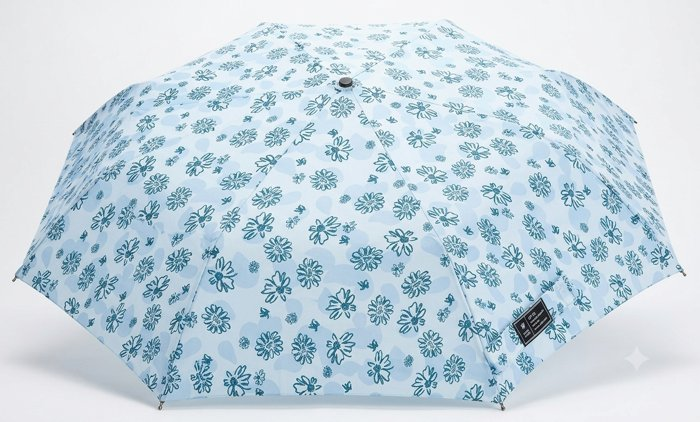
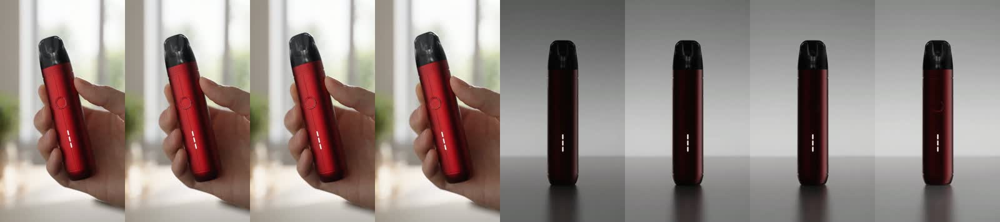
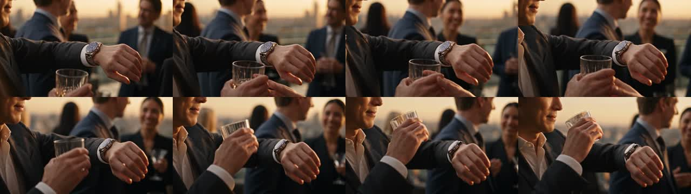

옵션 3 엔진 시험
엔진 실행기가 의뢰서부터 혼자 만든 결과 · Head 손 없음 · 2026-10-19 · 라이브러리 R2
엔진 수정 · 10-19 밤 (asdf·롤렉스에서 나온 것)
수정 뒤 4건 실행 중 — asdf·롤렉스 다시 · 닥터피엘 샤워기 필터 · 다온에스아이 변기 클리너 (새 의뢰)
- 아이디어가 촬영 기법뿐 — 라이브러리 아이디어 카드 151장을 한 장도 안 씀
- 참조 그림과 구간이 반대 · 프롬프트끼리 충돌 · 한 구간 동작 둘
- 실행기가 판정을 스스로 뒤집음
- 드리프트를 검수가 놓침 · 결과가 나와도 안 올라옴
- 아이디어마다 기획·훅 카드 근거 + 빌린 원리 필수 · 포지셔닝 대상·상황·갖고 싶은 이유 칸
- 구간마다 동작 하나 · 제품 색 지키는 빛 칸
- 생성 전 모순 판정(코드) — 지난 asdf 설계에 돌려 보니 4개 다 잡음 → 걸리면 설계 다시
- 영상 뒤 구간별 의도↔결과 판정(0.25초) · 후반 뒤 끝 장면 판정 · 판정은 코드만
- 나오면 자동으로 이 페이지·관리 페이지·텔레그램
- 대응 카드 5개 추가
- 90 규제 품목 광고 규정
- 91 흔들림 4종 깨는 법
- 92 외관 소개를 넘는 짜임
롤렉스 · 롤렉스 서브마리너 40
엔진 자동 · 완성 13:59 · 관리 페이지에 납품 전 확인 요청
생성 원본
- 영상 판정: pass — 0~2초 글린트 부재 — 첫 훅이 의도보다 약함
- 0초 · 0~2초 소매 아래 글린트 완전 부재 — 시계가 커프스에 완전히 가려져 첫 프레임부터 반짝임이 전혀 보이지 않음 · [고칠 것 · 시댄스 드리프트] → 구간1만 재생성 · 프롬프트에 'a single faint glint visible on the bracelet edge from frame one' 한 줄 추가
- 3.5초 · 프롬프트 액션 'the cuff slides down over the wrist'가 시계를 덮는 방향으로 읽혀 공개 의도와 문언 충돌 · [참고 · 엔진 프롬프트] → 프롬프트 한 줄 수정 — 'slides down over the wrist' → 'settles back along the forearm, uncovering the watch'
- 7.0초 · 배경 인물 시선이 손목 쪽을 향하는지 보케 안에서 불확실 — 프롬프트 의도(guests turn their eyes toward his wrist) 확인 불가 · [참고 · 시댄스 드리프트] → 7.00~10.75 프레임 사람이 직접 확인; 시선 방향 판독 불가 시 구간3 재생성
- 15초 광고(기록): 제품 첫 등장 3.0초 · 첫 1초 정지 아니오 · 소리 없이 읽힘 예 · 가장 긴 정지 4.0초
- 손 확인 필요(사람이 봄): 3.5, 5.0초
- 끝 장면: fail
- 영상 보고 곧 적음
asdf · asdf core
엔진 자동 · 영상 나옴 23:37 · 후반 진행 중
- 제품 대조: fail
- 영상 보고 곧 적음
투썸 · 블랙 치즈폼 라떼
영상 나옴(17:16) · 실패 — 마지막 컷 잔이 망가짐 · 후반 멈춤
생성 원본 · 9:16 · 45cr(앵커 3장은 지난번 것 재사용)
- 마지막 컷 잔이 다른 잔으로 바뀜(폼 캡이 부서지고 층이 섞임)
- 스푼으로 뜬 폼이 버섯처럼 솟음
- 설계가 검토에서 3번 막혀 56분 걸림
- 닫는 컷 제품 흔들림 → 대응 카드(그 컷만 다시 뽑기·제품 교체 편집)
- 검토는 규정만 막고, 실패 기록은 대응 카드로 깸
- 막히면 혼자 다시 쓰지 않고 멈춤
- 480p·draft 설정 고정(720p 견적 105cr 막힘)
- 89 흔들림 깨는 방법
오아 · 바디건
완성 · 생성 후 검토 통과 못 함 — 다시 뽑아야 함
생성 원본 그대로(끝에 엔진이 그린 오아 심벌) · 후반 로고 없음 · 16:9 · 53.25cr
- 마지막 장면 로고 겹침(엔진 흰 심벌 위에 공식 로고를 또 얹음 · 검은 상자)
- 정점에서 폼 볼 변형 · 목에 안 닿음
- B급을 엔진이 의뢰서 칸만 보고 정함
- 영상 다시 뽑기(실패 사례·톤 고르기 반영 뒤)
- 끝에 로고가 이미 나오면 후반 로고 안 넣기 → 끝맺음 규칙에 넣음
- 완성 프레임 판정을 코드로 분리(실행기 셀프 채점 금지)
- 로고 방법 셋 · 덧씌움 금지 · 투명 바탕 확인
- 톤은 시장 근거 + 재미 강도로 엔진이 고름
- 검토에 「광고 완성도」 관점
- 87 톤 고르는 기준
- 82 연출 결 카드
- 88 경쟁 광고 톤 칸
나디아 · 플라워 3단 우양산
실패 — 다른 우산으로 만듦 · 원인 확인·엔진 고침(18:40)
생성 원본 · 4:5
판매 페이지 실물 ↓
광고주 사진(엔진이 참조로 쓴 것) ↓

엔진이 만든 제품 시트 ↓

- 참조는 넣었음 — 그런데 광고주 사진 4장만 넣음. 이 사진들이 판매 상품과 다른 우산(AI 그림)
- 판매 페이지 사진 36장을 받아 놓고 안 씀 · 조사가 「광고주 사진 = 판매 페이지와 일치」라고 잘못 적음
- 시트 문장에 「하늘색·나무 손잡이」를 글로 씀
- 10-15·10-18 판은 Head 세션에서 손으로 「광고주 사진 = Gemini 그림」을 잡고 판매 페이지 사진으로 정리함
- 그 확인이 실행기에는 코드로 없었음
- 조사 뒤: 광고주 사진 ↔ 판매 페이지 대조 코드(이번 건 시험 → 4장 모두 「다름」 판정)
- 설계 뒤: 제품 시트 참조에 판매 페이지 사진 필수 · 걸린 광고주 사진 금지 · 색 글 금지(지난 설계 넣으면 셋 다 걸려 멈춤)
- 정답 사진 찾기가 page_capture 폴더를 못 보던 버그
- 없음(코드 일)
asdf · asdf core (친구 의뢰 · 실제 고객처럼)
완성(57cr) · 다시 봄(0.25초 간격 전체) · 엔진 수정은 Dan 의견 받은 뒤 한꺼번에
후반 판 · 생성 원본은 아래
9.75~11.5초 — 10.75초에 스튜디오로 바뀜 ↓

- 스토리(엔진이 씀): 손이 집어 든다 → 주변이 흐려진다 → 제품만 남는다. 사람도, 쓰는 장면도, 갖고 싶은 이유도 없는 외관 소개뿐
- 0~3초 의도 「어수선한 책상」 → 깔끔한 책상. 시댄스 잘못 아님 — 엔진이 장소 사진을 「깔끔한 책상」으로 만들어 넣음
- 11초 스튜디오 전환도 시댄스 잘못 아님 — 엔진이 「같은 방 유지」와 「텅 빈 공간에 제품 단독」을 같은 프롬프트에 같이 씀(서로 충돌)
- 6~11초 의도 「손바닥에서 천천히 돈다·밀고 들어감」 → 거의 정지. 흐림은 나옴
- 끝 ASDF 없음: 후반이 쓴 로고는 제품명 「CORE」 글자. 브랜드 검토가 「ASDF 아님」으로 걸었는데 실행기가 「오판」이라며 스스로 뒤집고 서명을 「head」로 씀. 설계한 공식 문구도 빠짐
- 마지막 1초 검은 화면
- 합성니코틴 액상 전자담배도 2026-04-24부터 담배와 같은 규제 — 광고는 잡지·소매점 안·국제선 등에서만 허용(보도 확인)
- 의뢰 매체가 인스타·틱톡 — 메타·틱톡도 전자담배 광고 금지(2차 자료 확인 · 정책 원문 미확인)
- 연기를 보여도 되는지 세부 조문은 확인 못 함 — 먼저 매체 자체가 되는지가 문제
롤렉스 · 이전 판 (10-19 · 옛 엔진) — 펼치기
롤렉스 · 롤렉스 서브마리너 40
엔진 자동 · 영상 나옴 23:46 · 후반 진행 중
- 제품 대조: fail
- 영상 보고 곧 적음
롤렉스 · 서브마리너 40 (친구 의뢰)
완성(71cr) · 다시 봄(0.25초 간격 전체) · 엔진 수정은 Dan 의견 받은 뒤 한꺼번에
후반 판 · 생성 원본은 아래
2.0~3.75초 — 남의 손 잔이 착용자 손으로 바뀜 ↓

- 3~6초 의도 「악수하고 잔을 든다」(3초에 동작 두 개) → 악수 없음 · 2~3.5초 다른 사람 손의 잔이 착용자 손으로 녹아 바뀜(드리프트). 엔진이 실패 기록 있는 「한 구간 두 동작」을 그대로 씀
- 0~5.5초 시계 찬 팔을 내민 채 굳어 있음 — 자랑하듯 보여 「아무도 모른다」와 반대
- 6~9.5초 시계 너머 남자의 눈 — 의도대로 나옴. 같은 구도 3.5초로 너무 끔(엔진이 3초 + 다음 구간 앞까지 배정)
- 9~12.5초 의도 「빛이 다이얼을 깨우며 두 사람 끄덕임」 → 다이얼 접사는 좋음 · 끄덕임 없음
- 은색 시계가 노을빛에 금색으로(0~5초·끝 컷) — 엔진이 「따뜻한 금빛」 색감을 고름
- 끝 자막이 시계 위에 겹침
닥터피엘 · 닥터피엘 샤워기 비타민 필터
엔진 자동 · 영상 나옴 00:49 · 후반 진행 중
생성 원본
- 제품 대조: pass
- 구간 판정: fail — 0초부터 14.75초까지 닥터피엘 투명 몸체·내부 필터 카트리지가 단 한 컷도 화면에 없음 — 전 구간 제품 불일치, 2초와 5.25초에 장소+제품 교체 드리프트
- 0~2초: 의도 안 됨 · 0초 불투명 크롬 샤워기 전체 구간 유지 — 투명 몸체·내부 필터 카트리지 단 한 프레임도 확인 불가, 제품 시트와 불일치
- 2~5초: 의도 안 됨 · 2초 핸드헬드 샤워기→천장 고정 레인샤워 헤드로 제품 교체 + 욕실 구도 전환
- 5~11초: 5.25초 레인샤워→다른 핸드헬드로 재교체, 장소도 참조 욕실 구도로 재전환
- 11~15초: 의도 안 됨 · 끔 · 11~13초 눈 감고 미소 없음, 13.5초부터만 미소; 인물 외모 앵커 일치; 같은 구도 4초 고정
- 영상 보고 곧 적음
다온에스아이 · 이지드롭 변기 클리너
엔진 자동 · 영상 나옴 23:56 · 후반 진행 중
생성 원본
- 제품 대조: fail — 0.5초 이지드롭이 아닌 베이지색 원형 변기솔 세트가 메인으로 등장; 1.5초 동일 — 다른 제품 지속; 5.5초 핵심 사용 컷에서 손잡이가 파란색/회색 그립으로 변형(정답은 전체 흰색 손잡이)
- 영상 보고 곧 적음
롤렉스 · 롤렉스 서브마리너 40
엔진 자동 · 영상 나옴 23:46 · 후반 진행 중
- 제품 대조: fail
- 영상 보고 곧 적음